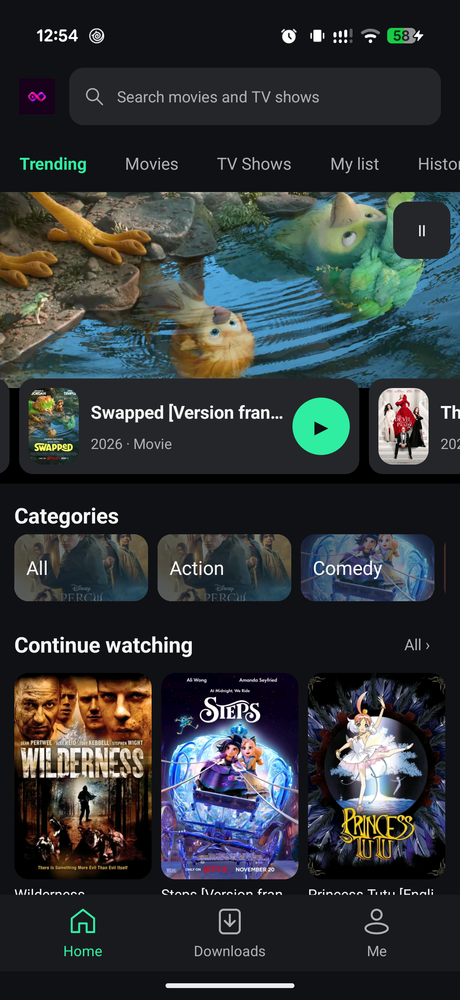

PUBLISHED PROJECTS · DOCUMENTED LIMITS
MovieBox Android App
An independent native phone app, separate from the Android patch.
Download the native Android app
This is MovieBox Android App, an independently authored phone client. The installed name is MovieBox. It is separate from the Android APK patch and uses org.emransm.moviebox.phone.

Install and keep your library
- Use an Android phone running Android 6.0/API 23 or newer.
- Download the APK from this project's release and compare its SHA-256 checksum.
- Open the APK using your browser or file manager and approve installation from that source when Android asks.
- Open MovieBox. Keep your device security protections enabled.
Android 6.0/API 23 is the minimum target. Earlier app candidates were exercised on an Android 6 emulator. Those historical checks do not certify this selected APK on every Android version or phone; read its release validation record.
For later updates, install an APK with the same package and certificate over this one. Do not uninstall or clear data to troubleshoot an update: My list, progress and local downloads belong to this app's private storage.
Playback made for touch
Native Media3 playback, available audio and subtitles, per-episode resume, automatic episode continuation, touch seeking, volume and brightness gestures, screen-fit controls and ten selectable app icons. Tap a featured slider thumbnail to play that title.
Source availability, quality, languages and captions depend on the upstream service. Account login, live channels and complete upstream feature parity are not included. This app does not change memberships or protected service access.
Keep your saved titles safe
In Me, choose Back up library to export My list and watch progress. Restore library backup merges a saved backup with your current library. It does not transfer account sessions, app settings or downloaded videos.
If saved data cannot be read, the recovery screen offers restoring a backup, saving the damaged data or starting a new library after confirmation. Do not uninstall or clear app data to repair a saved library.
Downloads and mobile data
New downloads use Wi-Fi unless you explicitly allow mobile data for that file. Roaming is disabled. Downloads shows progress and useful failure messages; Retry requests a fresh source.
Only supported single-file videos can be saved. Offline HLS/DASH playlists are not supported, and the app does not turn every stream into an offline file. Format choices rely on the supplied source metadata; server and device behavior can vary.
Subtitle storage stays bounded
Cached subtitles have file, size and age limits. Me → Clear cached subtitles removes unused cached captions while keeping My list, history and the subtitle currently playing. It does not remove your downloaded videos.
Updates are your choice
Optional reminders check published release information while the app is in use. A reminder can wait until you leave the player. They are not instant push notifications, and the app does not silently download or install updates. You can turn reminders off or use Check for updates yourself.
What was checked
The 0.1.1 release passed 127 scoped scenarios and 29 unit tests on the maintainer's physical Android 17 phone. These checks do not establish compatibility with every phone, Android version, network or file provider. See the release validation record for the exact APK identity.
Android 6.0/API 23 is the minimum target. The selected release's runtime evidence is from one physical phone; minimum-OS, low-end hardware, process-death restoration, whole-app accessibility and real carrier/OEM interruption coverage remain limited.
Which Android download do I need?
Android App is this separate native phone client for Android 6 and newer. Android patch is a reviewed modification of a specific upstream APK, with Android 10/ARM64 requirements and a different package. They have separate release histories and libraries; one is not an in-place update for the other.
Source, validation and project documentation · Report an Android app issue